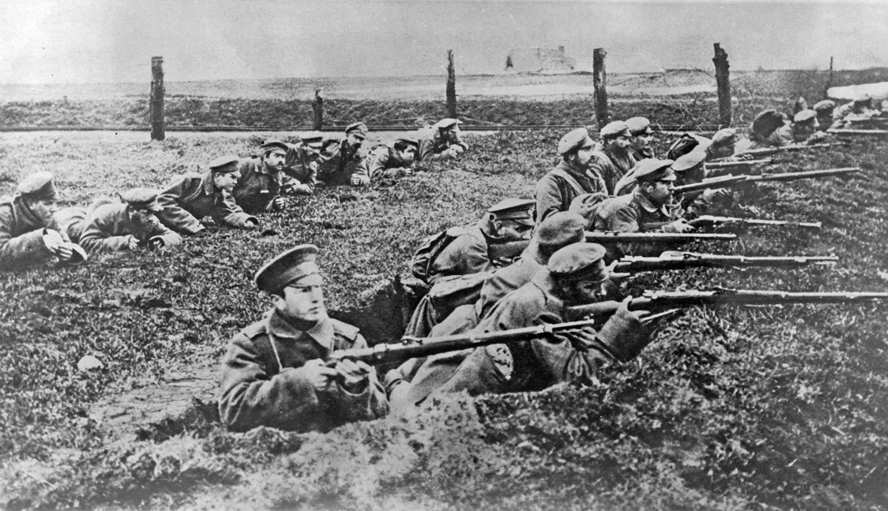
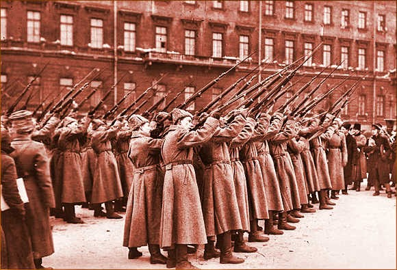
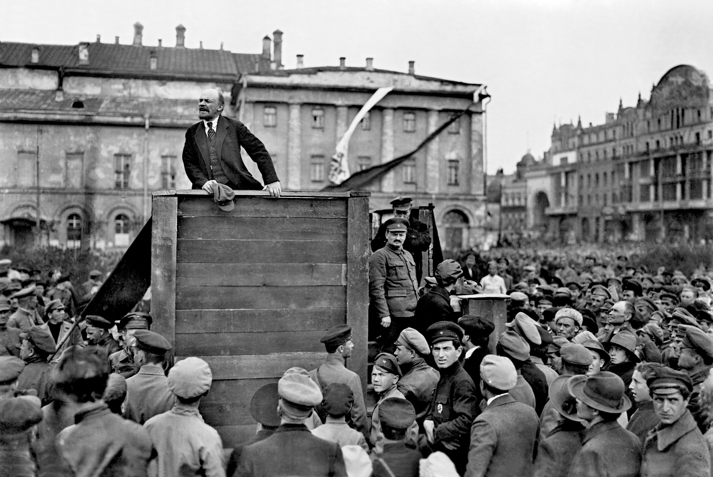
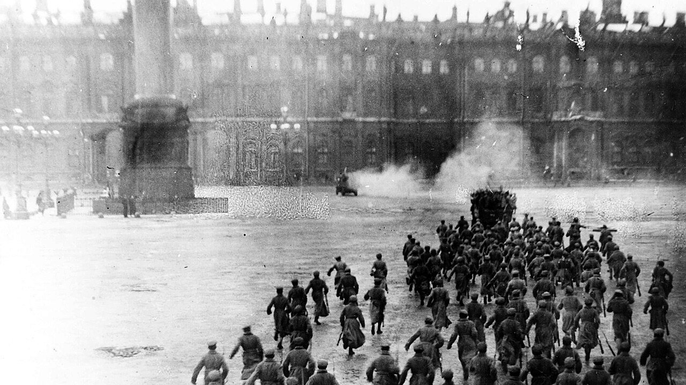
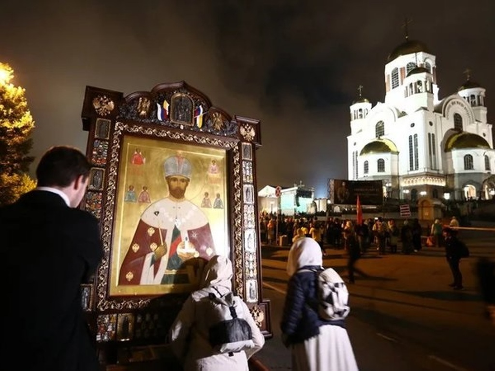

WORLD HISTORY • SEMESTER 1 • LESSON 08 • STANDARD 10.6
REVOLUTION
ESSENTIAL QUESTION
How did a world war break a 300-year empire and hand power to a group of radicals that nobody expected to win?
THE RUSSIAN REVOLUTION • 1914 TO 1922
1914
Russia enters World War I. The army is massive but badly equipped. Within two years, over two million Russian soldiers are dead.
Feb. 1917
Bread riots in Petrograd turn into a revolution. Tsar Nicholas II abdicates. The 300-year Romanov dynasty ends in a week.
Oct. 1917
Lenin's Bolsheviks seize the government in a near-bloodless coup. A second revolution, eight months after the first.
1918–21
Civil war between the Red Army and anti-Bolshevik forces. An estimated seven million people die. The Tsar and his family are executed.
1922
The Union of Soviet Socialist Republics is officially formed. The world's first communist state begins reshaping global politics.
On the morning of March 8, 1917, women factory workers in Petrograd walked off the job. They were hungry. Bread was being rationed. Their husbands were dying in the trenches of World War I. They took to the streets and started shouting. By the end of the week, the most powerful emperor in Europe had resigned and the 300-year-old Romanov dynasty was gone. Nobody planned it. Nobody predicted it. It just happened.
On March 8, 1917, women factory workers in Petrograd walked off the job. They were hungry. Bread was being rationed. Their husbands were dying in the war. They took to the streets and started shouting. By the end of the week, the most powerful emperor in Europe had resigned. The 300-year-old Romanov dynasty was finished. Nobody planned this. It just happened.
But that was only the first revolution. Eight months later, a second group seized power: a small, disciplined political party called the Bolsheviks, led by a man named Vladimir Lenin. By 1922 they had won a brutal civil war and built the world's first communist state. Russia would never be the same, and neither would the world. This lesson tells the story of how a single war cracked open an empire and let an entirely new kind of government pour out.
But that was only the first revolution. Eight months later, a small political party called the Bolsheviks seized power. Their leader was Vladimir Lenin. By 1922 they had won a brutal civil war and built the world's first communist state. Russia was never the same. Neither was the world. This lesson tells the story of how a war cracked open an empire and let a new kind of government pour out.
PHASE ONE
A BROKEN EMPIRE

Russian soldiers on the Eastern Front, circa 1915-1916. By 1917, Russia had suffered over two million military deaths and five million wounded in a war with no end in sight. Source: Wikimedia Commons.
In 1914, Tsar Nicholas IIThe last emperor of Russia, who ruled with absolute power and was overthrown in 1917. ruled an empire of 165 million people spanning eleven time zones. It was the largest country on earth by land. It was also deeply troubled. Most Russians were desperately poor peasant farmers. The government was an absolute autocracyA system of government where one person holds total, unlimited power. with no elected parliament and no way for ordinary people to influence decisions. When Nicholas took Russia into World War I, he did not ask anyone. He just did it.
In 1914, Tsar Nicholas II ruled an empire of 165 million people. It was the largest country on earth. But most Russians were desperately poor. The government was a total autocracy. One person held all the power. There was no parliament. When Nicholas took Russia into World War I, he made that decision alone.
The war exposed everything that was wrong with Russia. The army was enormous but badly equipped: soldiers were sometimes sent to the front without rifles and told to pick up weapons from the dead. Supply lines collapsed. Food stopped reaching cities. By 1917, more than two million Russian soldiers were dead, five million more were wounded, and the country was starving. Soldiers began deserting by the hundreds of thousands.
The war exposed everything wrong with Russia. Soldiers were sometimes sent to the front without rifles. Supply lines collapsed. Food stopped reaching cities. By 1917, more than two million Russian soldiers were dead. Five million more were wounded. The country was starving. Soldiers began deserting by the hundreds of thousands.
Nicholas refused to change anything. He believed God had chosen him to rule and that questioning his decisions was a form of sacrilege. His wife, Alexandra, was deeply influenced by a mysterious faith healer named RasputinA controversial mystic who had enormous influence over the Russian royal family, which further damaged the Tsar's reputation with the public and the nobility., whose influence over the royal family scandalized the country. By early 1917, even the nobles and military generals who had always supported the Tsar had lost faith in him.
Nicholas refused to change anything. He believed God had chosen him to rule. His wife Alexandra trusted a mysterious man named Rasputin, whose influence over the royal family shocked the country. By early 1917, even the nobles and generals who had always supported the Tsar no longer believed in him.
DID YOU KNOW
Vladimir Lenin, circa 1917. Source: Wikimedia Commons.
When the February Revolution broke out, Lenin was not even in Russia. He was living in exile in Switzerland and had been for years. Germany — wanting to knock Russia out of the war — secretly arranged to transport him across Europe in a sealed train car, like a political weapon in a box. Lenin arrived at Petrograd's Finland Station on April 16, 1917, and within six months his party had seized the government. Germany's plan worked almost exactly as intended.
PHASE TWO
TWO REVOLUTIONS IN ONE YEAR
Crowds in Petrograd after the Tsar's abdication, March 1917. The February Revolution was spontaneous and leaderless. Within days, 300 years of Romanov rule had ended. Source: Wikimedia Commons.
The February Revolution began not with a plan but with hunger. On March 8, 1917, women textile workers in Petrograd went on strike over bread shortages. Other workers joined them. Soldiers sent to break up the protests refused to fire on the crowds and joined the demonstrators instead. Within five days, the government had no army to enforce its orders. Nicholas II abdicated on March 15. A Provisional GovernmentA temporary government that took power after the Tsar resigned in 1917, intending to hold elections and continue the war. of liberal politicians took power and promised democratic elections.
The February Revolution began with hunger. On March 8, 1917, women workers in Petrograd went on strike over bread shortages. More workers joined them. Soldiers sent to stop the protests refused and joined the crowds instead. Within five days the government had no army to enforce its orders. Nicholas II resigned on March 15. A Provisional Government of politicians took power and promised elections.
The Provisional Government made one fatal mistake: it kept Russia in the war. Ordinary Russians were exhausted and wanted peace. Lenin saw the opening. When his sealed train delivered him to Petrograd in April, he immediately declared that the Provisional Government should be overthrown and the war ended at once. His BolsheviksLenin's radical political party that believed in immediate communist revolution, worker control of the government, and ending the war. were a small minority, but they were disciplined, organized, and they said exactly what millions of desperate people wanted to hear: land, peace, bread.
The Provisional Government made one fatal mistake: it kept Russia in the war. Ordinary Russians were exhausted and wanted peace. Lenin saw the opening. When he arrived in April, he immediately called for the Provisional Government to be overthrown. His Bolsheviks were small in number but very organized. They said exactly what millions of desperate people wanted to hear: land, peace, bread.
On the night of October 25, 1917, Bolshevik forces seized control of key buildings in Petrograd: railway stations, telephone exchanges, bridges, and finally the Winter Palace. The Provisional Government fell in a matter of hours. It was less a popular uprising than a precise military operation. Lenin announced the next morning that the workers and peasants had taken power. In reality, his party had.
On the night of October 25, 1917, Bolshevik forces seized key buildings in Petrograd: train stations, telephone exchanges, bridges, and the Winter Palace. The Provisional Government fell in hours. It was more a military operation than a popular uprising. Lenin announced that workers and peasants had taken power. In reality, his party had.
FAST FACTS
THE COST OF REVOLUTION AND CIVIL WAR
2M+Russian soldiers killed in World War I before the revolution — a toll that destroyed public support for the Tsar and the war
7Mpeople estimated to have died in the Russian Civil War between 1918 and 1921, mostly from disease, famine, and mass executions
300years the Romanov dynasty had ruled Russia before collapsing in a single week of bread riots in March 1917
7members of the Romanov royal family executed by the Bolsheviks in a basement in Yekaterinburg on July 17, 1918
PHASE THREE
WHAT IT COST

Red Army soldiers during the Russian Civil War, 1918-1921. The Bolsheviks fought anti-revolutionary forces for three years before consolidating control. An estimated seven million people died. Source: Wikimedia Commons.
The Bolsheviks had seized power easily, but keeping it was another matter. Almost immediately, a civil war broke out between the Red ArmyThe Bolshevik military force that fought to keep Lenin's government in power during the Russian Civil War. and a loose alliance of anti-Bolshevik forces known as the White Army, backed by foreign governments including Britain, France, and the United States. The war lasted three years and was extraordinarily brutal. Villages were burned. Populations were executed. Disease and famine spread across the country.
Seizing power was easy. Keeping it was not. Almost immediately a civil war broke out. The Bolshevik Red Army fought a loose group of anti-Bolshevik forces called the White Army. Foreign countries including Britain and the United States sent support to the White Army. The war lasted three years. Villages burned. People were executed. Disease and famine spread across the country.
In the middle of the civil war, the Bolsheviks made a decision that shocked the world. Tsar Nicholas II and his entire family had been held under arrest since his abdication. On the night of July 17, 1918, worried that the White Army was advancing and might free the Tsar and use him as a symbol, Bolshevik guards shot Nicholas, his wife Alexandra, their five children, and three servants in a basement in the city of Yekaterinburg. The Romanov dynasty ended in that room.
In the middle of the civil war, the Bolsheviks made a shocking decision. Tsar Nicholas II and his family had been held prisoner since his abdication. On July 17, 1918, Bolshevik guards shot Nicholas, his wife, their five children, and three servants in a basement. The Bolsheviks were afraid the White Army might free the Tsar and use him as a symbol. The Romanov dynasty ended in that basement.
Lenin also unleashed what became known as the Red TerrorA campaign of mass arrests, executions, and intimidation by the Bolshevik secret police to eliminate political opponents and anyone seen as an enemy of the revolution.: a campaign of mass arrests and executions by the secret police targeting anyone seen as an enemy of the revolution. Estimates suggest that tens of thousands of people were shot without trial during this period. The revolution that had promised liberation used fear and violence to stay in power.
Lenin also launched what became known as the Red Terror. The secret police arrested and executed anyone seen as an enemy of the revolution. Tens of thousands of people were shot without trial. The revolution that had promised liberation used fear and violence to hold onto power.
ART SPOTLIGHT
"Beat the Whites with the Red Wedge" — El Lissitzky, 1919
This propaganda poster was made during the Russian Civil War to encourage support for the Bolshevik Red Army. The red triangle represents the Bolsheviks. The white circle represents their opponents.
El Lissitzky designed this poster while working as an art teacher. He used pure geometry because he believed that shapes and colors could communicate political ideas to people who could not read. At the time, roughly half of the Russian population was illiterate. The Bolsheviks invested heavily in visual propaganda precisely because they knew words alone would not reach everyone they needed to convince. This poster is now considered one of the most influential works of 20th-century graphic design.
PHASE FOUR
A NEW KIND OF POWER

Lenin addresses a crowd, circa 1920-1922. By 1922, the Bolsheviks had established the Union of Soviet Socialist Republics, the world's first communist state. Source: Wikimedia Commons.
By 1921, the Bolsheviks had won the civil war. In December 1922, they formally established the Union of Soviet Socialist RepublicsThe USSR, or Soviet Union: the communist state that replaced the Russian Empire and lasted from 1922 until 1991.. The new government abolished private ownership of land and businesses. Banks, factories, and farms came under state control. The Communist Party became the only legal political party. Elections were held, but only approved candidates could run.
By 1921 the Bolsheviks had won the civil war. In 1922 they established the Union of Soviet Socialist Republics, the USSR. The new government abolished private ownership of land and businesses. Banks, factories, and farms came under state control. The Communist Party became the only legal party. Elections were held, but only approved candidates could run.
The revolution transformed not just Russia but world history. For the next seven decades, the Soviet Union would stand as an alternative model of government and economics, challenging the capitalist democracies of Western Europe and the United States. Every major conflict of the 20th century — World War II, the Cold War, independence movements in Asia and Africa — was shaped by the existence of the Soviet Union. It all traced back to those hungry women who walked off the job in Petrograd in March 1917.
The revolution changed not just Russia but world history. For the next seventy years, the Soviet Union stood as an alternative to Western democracy and capitalism. Every major conflict of the 20th century was shaped by the Soviet Union's existence. It all traced back to the hungry women who walked off the job in Petrograd in March 1917.
PRIMARY SOURCE MOMENT
Lenin addresses workers and soldiers in Petrograd, April 1917. Source: Wikimedia Commons.
"The specific feature of the present situation in Russia is that the country is passing from the first stage of the revolution — which, owing to the insufficient class-consciousness and organization of the proletariat, placed power in the hands of the bourgeoisie — to its second stage, which must place power in the hands of the proletariat and the poorest sections of the peasants... No support for the Provisional Government."
— Vladimir Lenin, "The April Theses," April 7, 1917
WHY THIS MATTERS: Lenin is saying that the February Revolution was only the beginning. He is telling his followers that a second revolution is necessary — one that takes power away from the politicians and gives it to workers and poor farmers. He is also saying directly that the Bolsheviks will not support the Provisional Government. This document, written just days after his return to Russia, is the roadmap for everything the Bolsheviks did next. Ask yourself: what does this tell you about Lenin's goals compared to what most Russians thought the revolution would bring?
THEN AND NOW
THE RUSSIAN REVOLUTION CREATED A GOVERNMENT THAT LASTED 69 YEARS AND SHAPED EVERY MAJOR CONFLICT OF THE 20TH CENTURY.
1917

Bolshevik forces at the Winter Palace, October 1917. The seat of the Provisional Government fell in hours. Source: Wikimedia Commons.
NOW

The Church on the Blood in Yekaterinburg, Russia, built on the site where the Romanov family was executed in 1918. Russians visit today to remember and reflect. Source: CC license.
THEN
On the night of October 25, 1917, Bolshevik forces took the Winter Palace and ended the Provisional Government. It was the moment Lenin's party officially seized control of Russia. What began as hungry women striking over bread had become a revolution that would change the world. The Soviet Union that grew from this moment would last until 1991 and shape global politics for nearly a century.
NOW
Today the Church on the Blood stands in Yekaterinburg on the exact site where Tsar Nicholas II and his family were executed in 1918. Russians visit to remember the last royal family and to wrestle with what the revolution meant. The Soviet Union itself collapsed in 1991. But the questions the Russian Revolution raised — about who should hold power, what governments owe their people, and what happens when ordinary citizens can no longer survive — are still being asked everywhere.
CONNECTION
The Russian Revolution connects directly to the next lesson and to the next semester. It is why the peace treaty after World War I was so complicated. It is why totalitarian governments rose across Europe in the 1920s and 1930s. It is why the Cold War happened. A chain of causes runs from those hungry women in Petrograd in 1917 all the way to the world you were born into. Understanding the revolution means understanding how the modern world was made.
The women who started the February Revolution were not political leaders. They were factory workers who were hungry and exhausted. What does it tell you about how history works that the people who changed the world in 1917 were not the ones who planned to?